Module 1 - Workshop Setup
This workshop uses QGIS v3.40 and the FLO-2D Gila Plugin v2.0.0. Install Instructions
Required Data
The required data can be downloaded here:
Data InstallerStep 1: Install class data
Double click the Workshop Installer.exe.
Install using default settings.
Close the installer when the Completed message is listed in the Install Window.
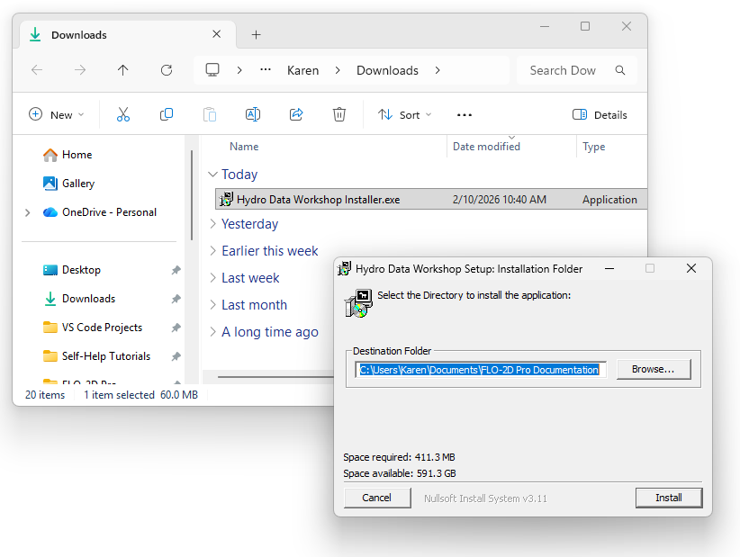
Step 2: Set up the quick access folder
Find the training folder.
C:\Users\Public\Documents\FLO-2D PRO Documentation\Example Projects
Drag the Workshop Folder into the Quick Access Area.
It can be removed after the class is over.
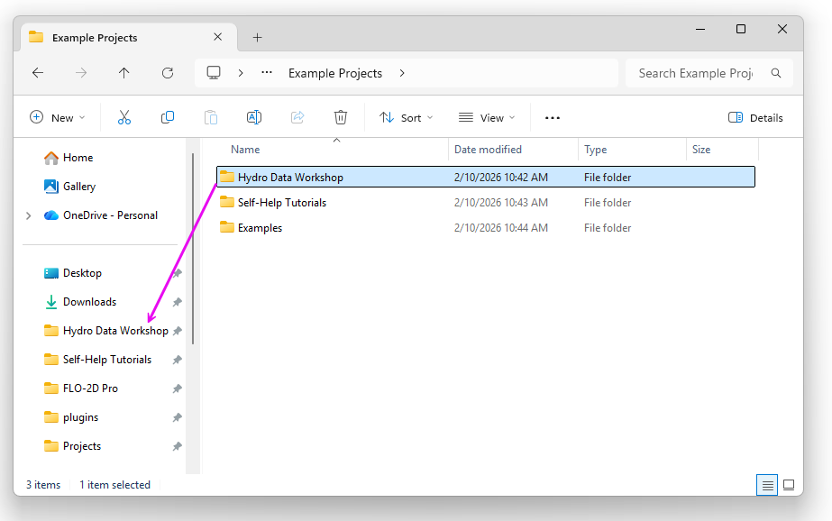
Step 3: Load QGIS
Open QGIS
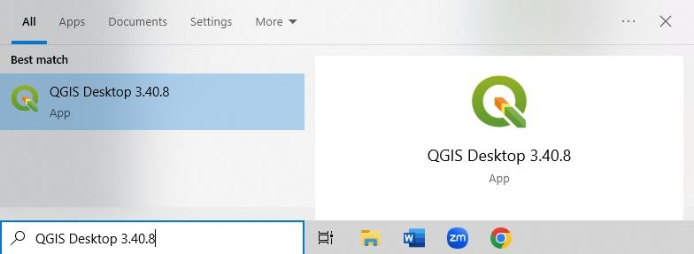
Open the plugin manager and load the Installed Tab.
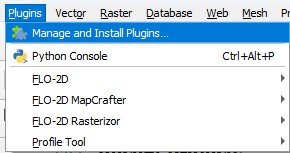
If you are missing any of these plugins please follow the Install Instructions.
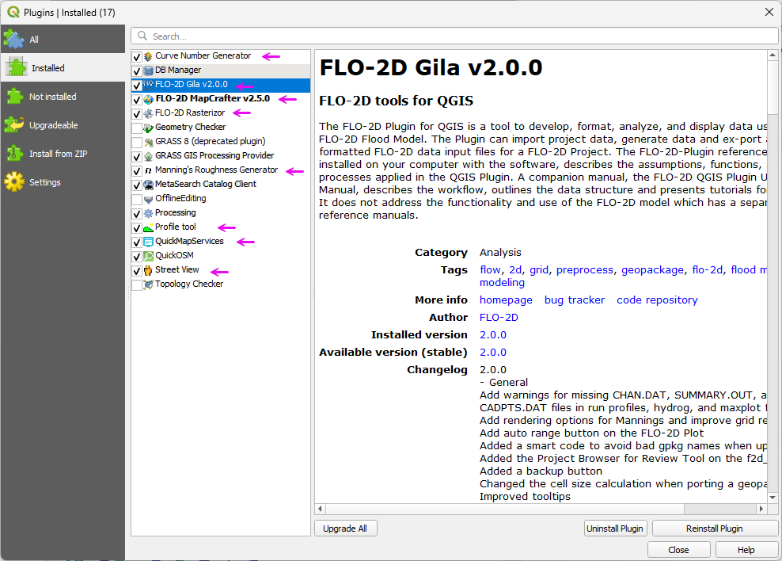
Open the Settings>>Options menu.
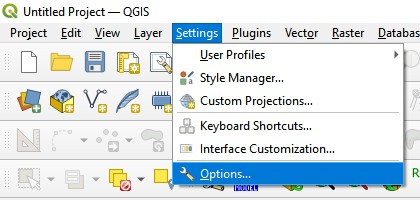
Find the CRS tab and select the Use Project CRS button.
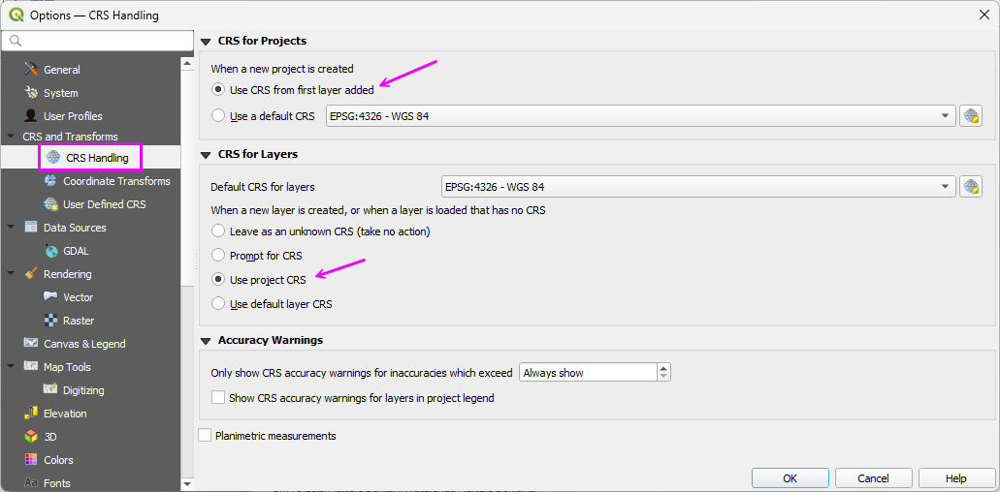
QGIS Layout Overview
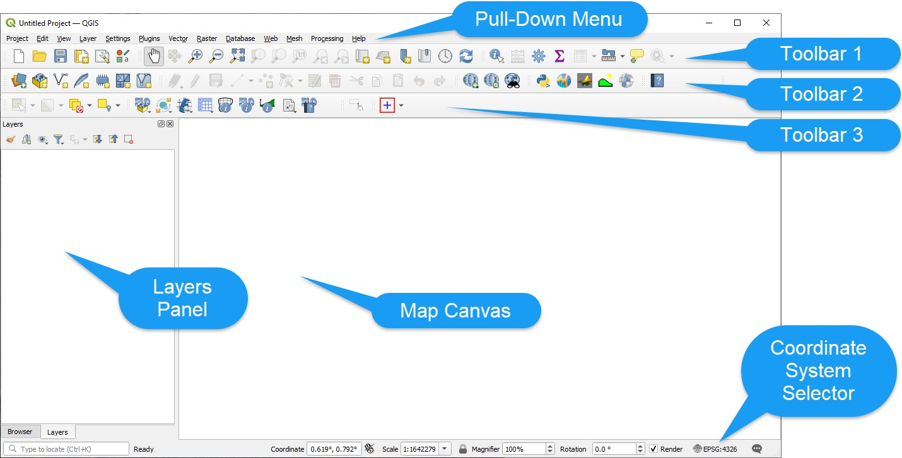
QGIS Toolbar Layout Overview
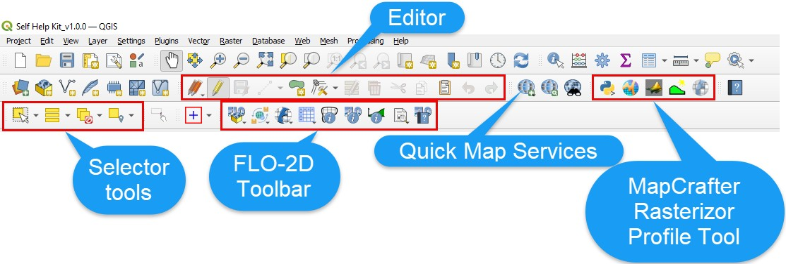
Module 1 - Connect Data
Use the following steps to connect to U.S. government or international data servers. If a local agency provides a server connection URL, QGIS can connect to it using the same workflow. Servers that require authentication can be configured through the QGIS connection settings.
Step 1: 3DEP elevation server connection
Load the Data Manager by clicking the colorful icon below.
Set the tab to WCS.
Click New and enter a name and paste the URL.
URL: https://elevation.nationalmap.gov/arcgis/services/3DEPElevation/ImageServer/WCSServer
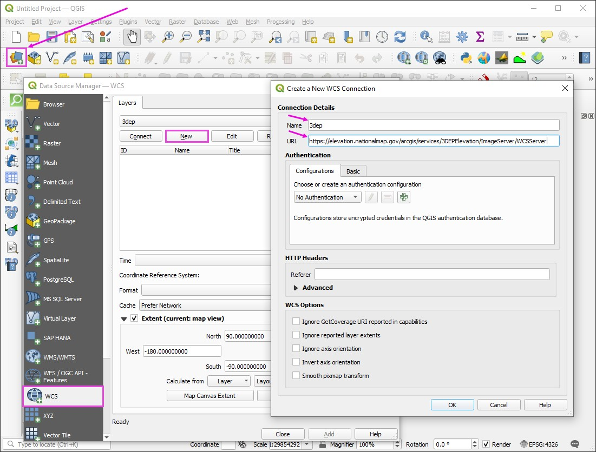
Step 2: Land cover NLCD server connection
Load the Data Manager by clicking the colorful icon below.
Set the tab to WCS.
Click New and enter a name and paste the URL.
URL: https://dmsdata.cr.usgs.gov/geoserver/mrlc_Land-Cover-Native_conus_year_data/wcs
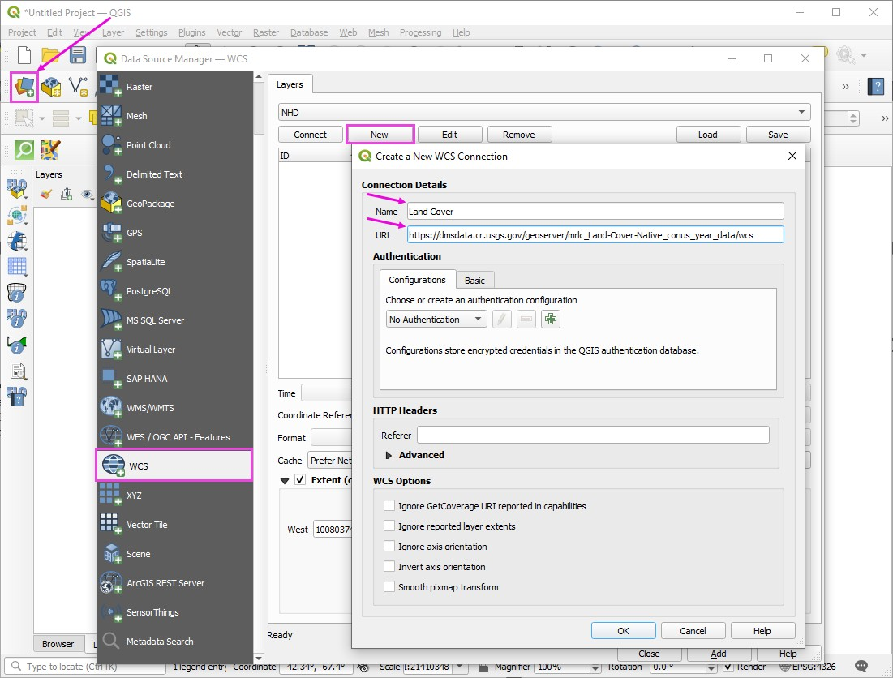
Step 3: Hydrography NHD server connection
Load the Data Manager by clicking the colorful icon below.
Set the tab to ArcGIS REST Server.
Click New and enter a name and paste the URL.
URL: https://hydro.nationalmap.gov/arcgis/rest/services/NHDPlus_HR/MapServer
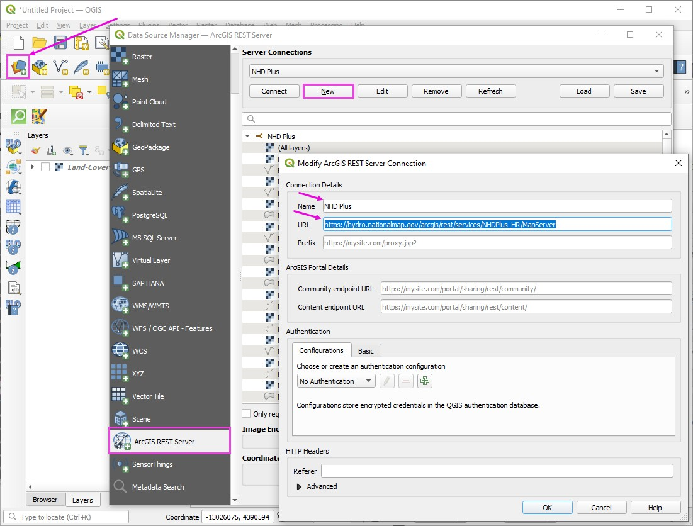
Step 4: FEMA Effective Server
Load the Data Manager by clicking the colorful icon below.
Set the tab to ArcGIS REST Server.
Click New and enter a name and paste the URL.
URL: https://hazards.fema.gov/arcgis/rest/services/public/NFHL/MapServer
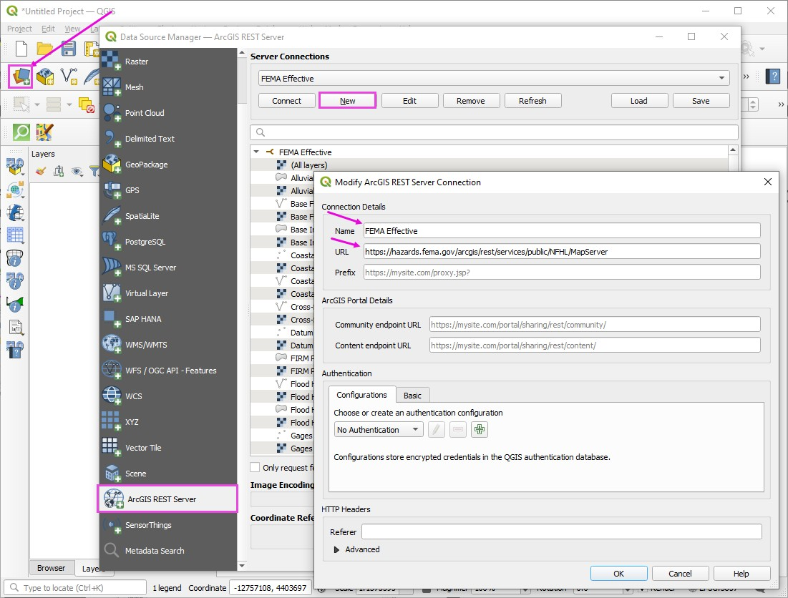
Step 5: Levee Database
Load the Data Manager by clicking the colorful icon below.
Set the tab to ArcGIS REST Server.
Click New and enter a name and paste the URL.
URL: https://geospatial.sec.usace.army.mil/dls/rest/services/NLD/Public/FeatureServer
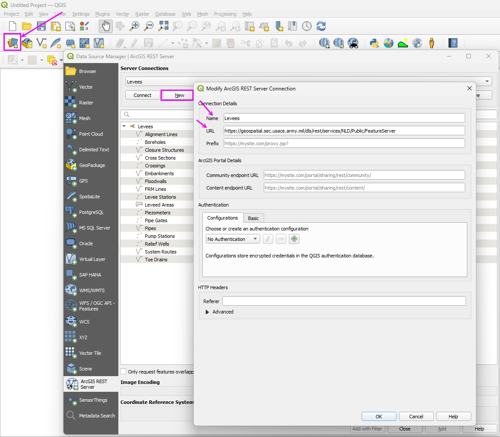
Important
Close and Reload QGIS to save the User Profile. If QGIS crashes before the profile is saved, the setup step will need to be repeated.
Module 1 - Load FLO-2D Project
Step 1: Load the project
Click the Open FLO-2D Project button.
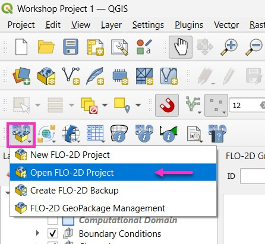
Navigate to the Workshop folder and open the Workshop Project 1.gpkg file.
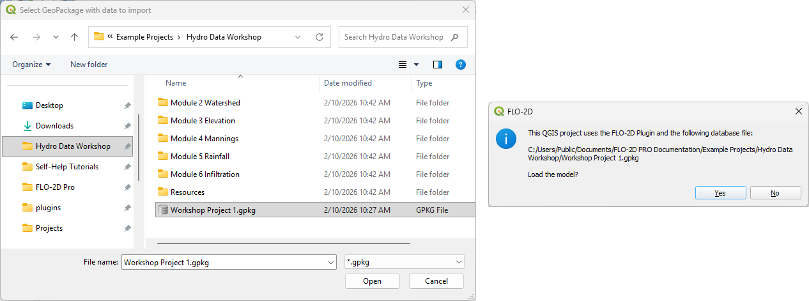
The project should look like this:
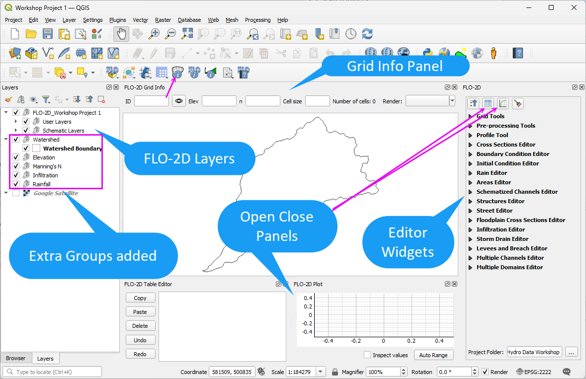
Step 2: Review Available Data
Note
Since the data processing steps in this workshop depend on a good internet connection and the ability to download large datasets, some files are available in the Workshop Folders.
Open the Workshop directory and review the data files.
If a download process fails, find the data in each respective folder.
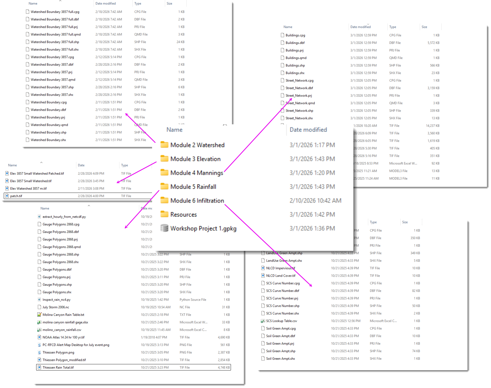